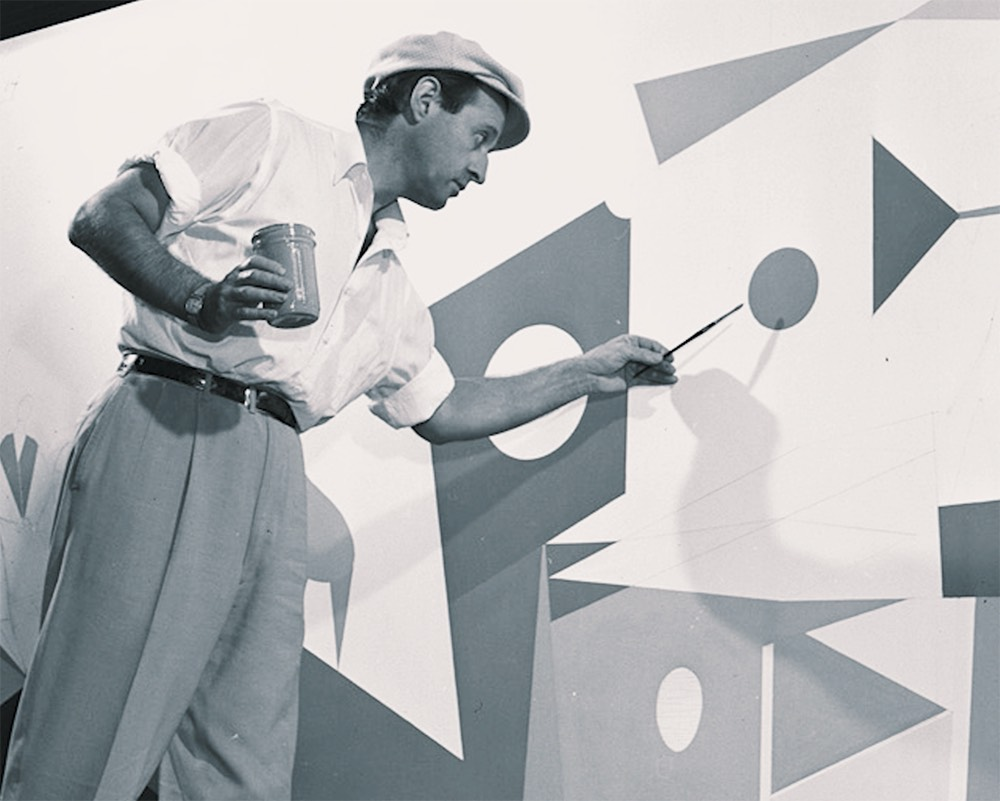
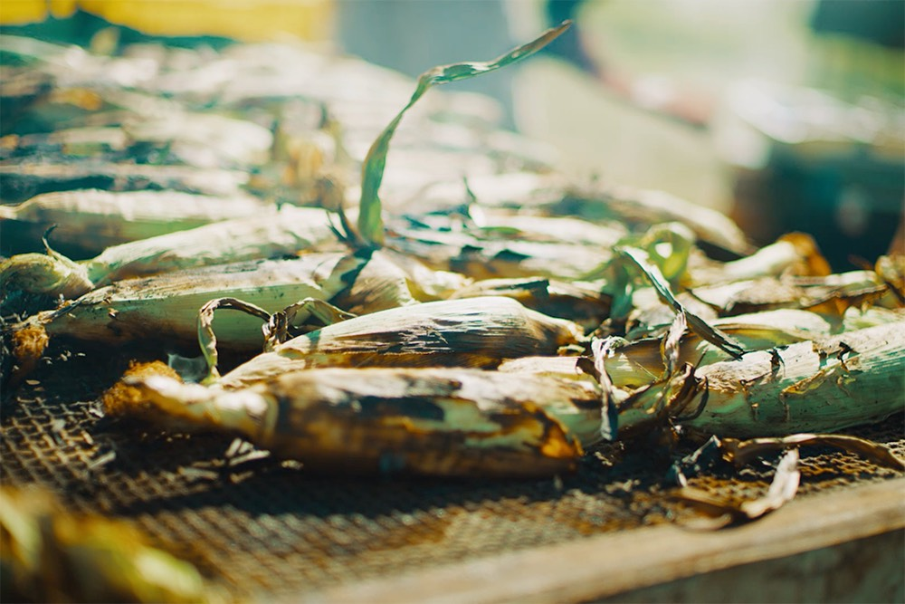
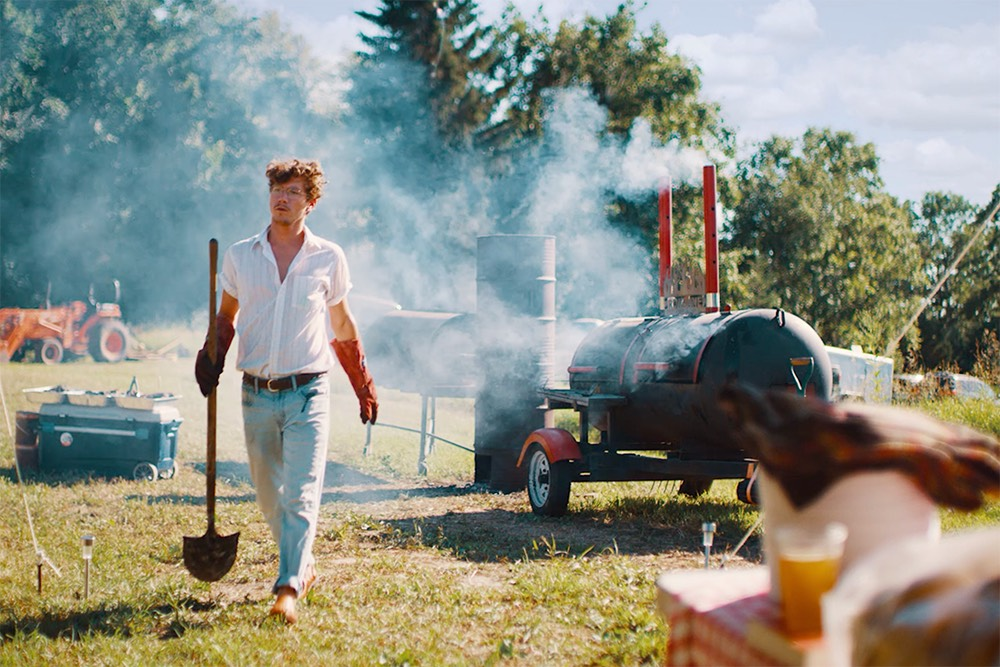

Hosted by Avrom Farm, the former home of renowned sculptor-painter Lester Schwartz.
(Now run by his grandson, Hayden.)

A day and night of music, farm-raised food, and great company.


Promoting regenerative agriculture.
 Jess Sah Bi & Peter One
Jess Sah Bi & Peter One